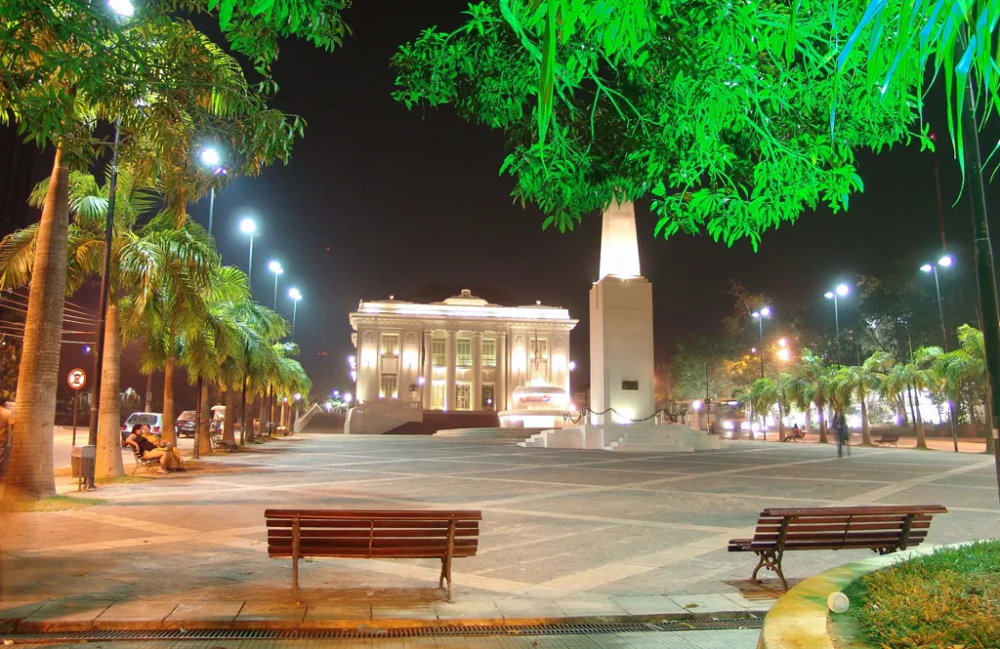

O Acre é um estado localizado na região Norte do Brasil, conhecido por sua vasta floresta amazônica e rica biodiversidade. Sua economia é baseada na agropecuária, especialmente na produção de borracha, madeira e produtos derivados da floresta. A capital do estado é Rio Branco, que é o principal centro urbano e comercial. O Acre também é marcado por sua história de colonização e pela forte presença de comunidades indígenas. Além disso, o estado possui belezas naturais, como rios e parques ambientais.
